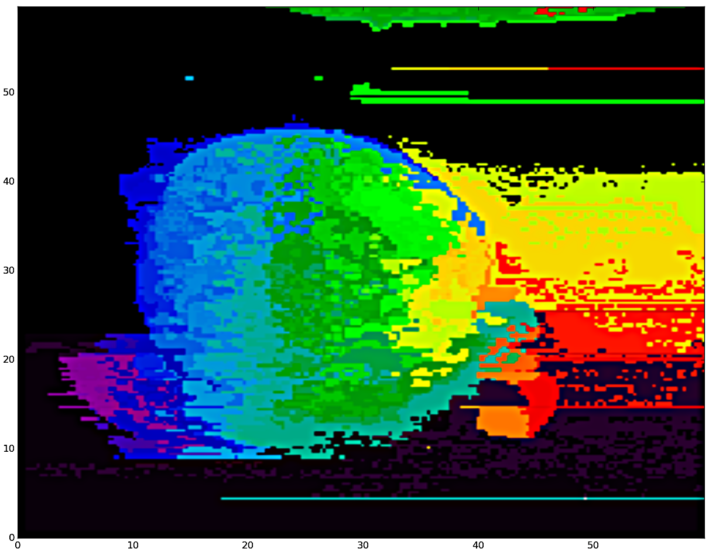

SpecImage module for python
A general module for hyperspectral image analysis
Developed by Leonardo de Oliveira Martins at the University of Vigo and at the Imperial College London for the SAVVY Project.
Main Features
- Import text files from WiTec and Matlab; saving to Pickle format
- Plotting of spectral densities
- Removal of noise and cosmic spikes from spectra
- Interpolation and rescaling (normalization)
- Image simplification/reduction
- Background and baseline corrections
- Endmember extraction and abundance maps
- Modelling, clustering and classification
Noise and cosmic spikes
Plotting of distribution of spectra
OBS: the images represent distinct imagesInterpolation
Savitzky–Golay filter
|
Moving average smoothing
|
Also
- Linear interpolation
- Spline interpolation
- LOWESS regression
Prediction via interpolation
Normalization
def rescale_01(self):
# Linear rescaling to interval zero-one
self.spc = np.array([rescale_spectrum_01(spec) for spec in self.spc],dtype=float)
return self
def rescale_zero(self):
# force series to start at zero, while maintaining range
self.spc = np.array([spec - min(spec) for spec in self.spc],dtype=float)
return self
def rescale_mean(self):
# centralization to the mean
self.spc = np.array([spec/np.mean(spec) for spec in self.spc],dtype=float)
return self
def rescale_zscore(self):
# Standardization of spectrum to a N(0,1)
self.spc = np.array([(spec - np.mean(spec))/np.std(spec) for spec in self.spc],dtype=float)
return self
Simplification of spectral matrix
|  Similar pixels replaced by 'exemplar' spectra |
List of 'exemplars'
|
Background correction by PCA transform
- Application of a PCA dimensionality reduction followed by inverse transform
- Recreates original data but using only principal components
- Can be applied over wave numbers or over spectra (pixels)
(1) Original data
(2) after PCA noise reduction
(3) after PCA pixel reduction
Baseline correction
| Rubberband baseline |
Polynomial baseline

|
| Piecewise rubberband baseline | Asymmetric least squares baseline |